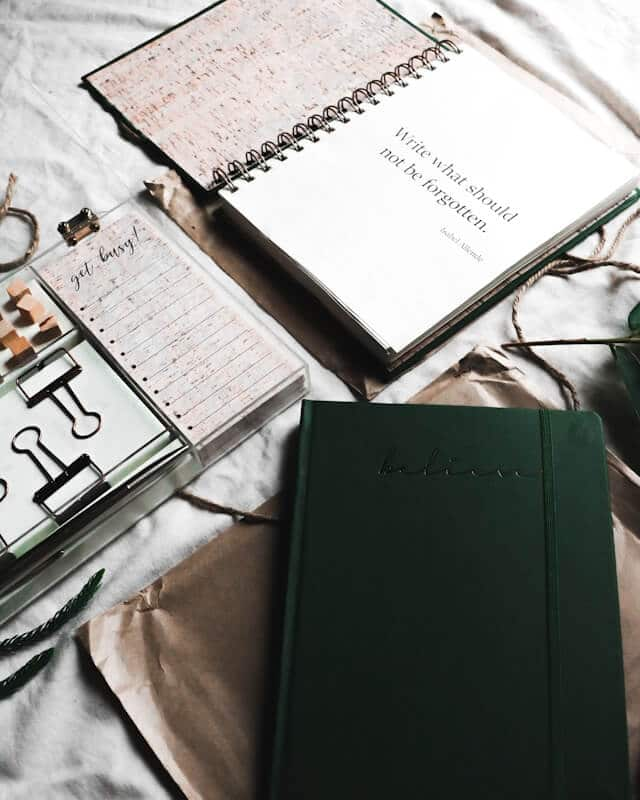

Related Experience
Get to know where I've proven my skills
Web Developer – Digital Strategy | BridgesPro Connect
- Conducted a full website audit to assess usability, information architecture, and system performance
- Designed UX wireframes and developed a sitemap to guide a platform redesign
- Collaborated with the project coordinator and designers using Bitrix24, Gantt charts, and agile sprints
Operations Supervisor | Pho 37 Ltd
- Reduced system downtime 20% by coordinating POS troubleshooting with vendor IT
- Deployed and configured POS applications and attendance systems across locations
- Managed supply ordering across 10+ categories; forecasted demand to prevent shortages
- Trained staff on POS usage and provided troubleshooting guidance
Information Ambassador Volunteer | RBC Race for the Kids 2025
- Assisted 300+ participants during a 7,000+ attendee event with navigation, schedules, and inquiries
- Supported registration and donation forms, ensuring accuracy and clear communication
- Managed high-traffic areas during kit pick-up and coordinated distribution of donor rewards

im